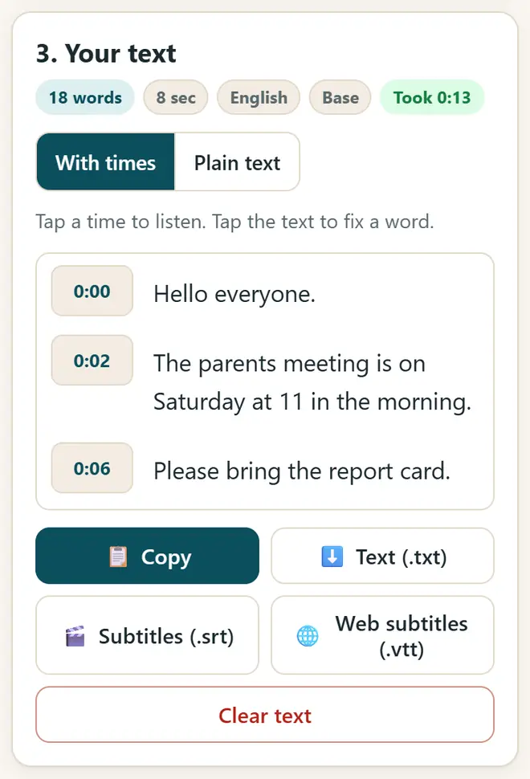

ਹਿੰਦੀ ਵੌਇਸ ਟਾਈਪਿੰਗ: ਬੋਲ ਕੇ ਮੁਫ਼ਤ ਵਿੱਚ ਟੈਕਸਟ ਕਿਵੇਂ ਬਣਾਈਏ
ਲੰਬੇ ਮੈਸੇਜ, ਨੋਟ ਜਾਂ ਚਿੱਠੀਆਂ ਟਾਈਪ ਕਰ-ਕਰ ਕੇ ਥੱਕ ਗਏ? ਆਪਣੀ ਆਵਾਜ਼ ਰਿਕਾਰਡ ਕਰੋ ਜਾਂ WhatsApp ਦਾ ਵੌਇਸ ਨੋਟ ਚੁਣੋ, ਅਤੇ AI ਉਸ ਨੂੰ ਲਿਖ ਦੇਵੇਗਾ। ਸਭ ਕੁਝ ਤੁਹਾਡੇ ਆਪਣੇ ਡਿਵਾਈਸ ਉੱਤੇ ਚੱਲਦਾ ਹੈ, ਇਸ ਲਈ ਨਿੱਜੀ ਆਡੀਓ ਨਿੱਜੀ ਹੀ ਰਹਿੰਦੀ ਹੈ।
ਛੋਟਾ ਜਵਾਬ
ਵੌਇਸ ਨੋਟ ਤੋਂ ਲਿਖਤ ਖੋਲ੍ਹੋ, “ਮਾਈਕ ਨਾਲ ਰਿਕਾਰਡ ਕਰੋ” ਦਬਾ ਕੇ ਬੋਲੋ (ਜਾਂ ਵੌਇਸ ਨੋਟ ਲਈ “ਫ਼ਾਈਲ ਚੁਣੋ” ਦਬਾਓ)। ਬੋਲੀ ਗਈ ਭਾਸ਼ਾ ਚੁਣੋ, ਹਿੰਦੀ ਅੱਖਰਾਂ ਵਿੱਚ ਹਿੰਦੀ ਲਈ “ਸਮਾਲ” ਮਾਡਲ ਲਓ ਅਤੇ “ਲਿਖਤ ਵਿੱਚ ਬਦਲੋ” ਦਬਾਓ। ਟੈਕਸਟ ਪੜ੍ਹੋ, ਗ਼ਲਤ ਸ਼ਬਦ ਠੀਕ ਕਰੋ, ਫਿਰ ਕਾਪੀ ਕਰੋ ਜਾਂ “ਲਿਖਤ (.txt)” ਡਾਊਨਲੋਡ ਕਰੋ। ਅੰਗਰੇਜ਼ੀ ਬਹੁਤ ਸਹੀ ਆਉਂਦੀ ਹੈ; ਹਿੰਦੀ “ਸਮਾਲ” ਨਾਲ ਠੀਕ-ਠਾਕ ਆਉਂਦੀ ਹੈ ਅਤੇ ਇੱਕ ਵਾਰ ਜਾਂਚਣੀ ਪੈਂਦੀ ਹੈ।
5 ਕਦਮਾਂ ਵਿੱਚ ਆਵਾਜ਼ ਤੋਂ ਟੈਕਸਟ
-
ਆਵਾਜ਼ ਰਿਕਾਰਡ ਕਰੋ ਜਾਂ ਫ਼ਾਈਲ ਜੋੜੋ
ਵੌਇਸ ਨੋਟ ਤੋਂ ਲਿਖਤ ਖੋਲ੍ਹੋ। “ਮਾਈਕ ਨਾਲ ਰਿਕਾਰਡ ਕਰੋ” ਦਬਾਓ, ਸਾਫ਼ ਬੋਲੋ ਅਤੇ “ਰੋਕੋ ਅਤੇ ਵਰਤੋ” ਦਬਾਓ। ਜਾਂ “ਫ਼ਾਈਲ ਚੁਣੋ” ਦਬਾ ਕੇ WhatsApp ਦਾ ਵੌਇਸ ਨੋਟ, ਕੋਈ ਰਿਕਾਰਡਿੰਗ ਜਾਂ ਵੀਡੀਓ ਚੁਣੋ (30 ਮਿੰਟ ਤੱਕ)।
-
ਬੋਲੀ ਗਈ ਭਾਸ਼ਾ ਚੁਣੋ
“ਆਡੀਓ ਵਿੱਚ ਬੋਲੀ ਗਈ ਭਾਸ਼ਾ” ਵਿੱਚ ਹਿੰਦੀ, ਅੰਗਰੇਜ਼ੀ ਜਾਂ ਕੋਈ ਹੋਰ ਭਾਸ਼ਾ ਚੁਣੋ। ਭਾਸ਼ਾ ਆਪਣੇ-ਆਪ ਪਛਾਣਨ ਵਾਲਾ ਵਿਕਲਪ ਵੀ ਚੱਲਦਾ ਹੈ, ਪਰ ਆਪ ਚੁਣਨਾ ਵੱਧ ਭਰੋਸੇਯੋਗ ਹੈ।
-
AI ਮਾਡਲ ਚੁਣੋ
“ਟਾਈਨੀ” ਅਤੇ “ਬੇਸ” ਤੇਜ਼ ਹਨ ਅਤੇ ਸਾਫ਼ ਅੰਗਰੇਜ਼ੀ ਲਈ ਚੰਗੇ ਹਨ। ਹਿੰਦੀ ਅੱਖਰਾਂ ਵਿੱਚ ਹਿੰਦੀ ਲਈ “ਸਮਾਲ” ਚੁਣੋ: ਇਹ ਸਭ ਤੋਂ ਸਹੀ ਲਿਖਦਾ ਹੈ, ਪਰ ਇਸ ਦਾ ਡਾਊਨਲੋਡ ਵੱਡਾ ਹੈ ਅਤੇ ਇਹ ਹੌਲੀ ਹੈ, ਇਸ ਲਈ ਫ਼ੋਨ ਨਾਲੋਂ ਲੈਪਟਾਪ ਜਾਂ ਕੰਪਿਊਟਰ ਬਿਹਤਰ ਹੈ।

ਬੋਲੀ ਗਈ ਭਾਸ਼ਾ ਅਤੇ AI ਮਾਡਲ ਚੁਣੋ। -
ਟੈਕਸਟ ਵਿੱਚ ਬਦਲੋ
“ਲਿਖਤ ਵਿੱਚ ਬਦਲੋ” ਦਬਾਓ ਅਤੇ ਪੰਨਾ ਖੁੱਲ੍ਹਾ ਰੱਖੋ। ਪਹਿਲੀ ਵਾਰ AI ਮਾਡਲ ਇੱਕ ਵਾਰ ਡਾਊਨਲੋਡ ਹੁੰਦਾ ਹੈ (Wi-Fi ਬਿਹਤਰ ਹੈ)। ਟੈਕਸਟ ਹਿੱਸਾ-ਹਿੱਸਾ ਕਰ ਕੇ ਆਉਂਦਾ ਹੈ।
-
ਠੀਕ ਕਰੋ ਅਤੇ ਵਰਤੋ
ਉਹ ਹਿੱਸਾ ਦੁਬਾਰਾ ਸੁਣਨ ਲਈ ਸਮੇਂ ਉੱਤੇ ਟੈਪ ਕਰੋ, ਅਤੇ ਸ਼ਬਦ ਠੀਕ ਕਰਨ ਲਈ ਟੈਕਸਟ ਉੱਤੇ ਟੈਪ ਕਰੋ। ਫਿਰ ਟੈਕਸਟ ਕਾਪੀ ਕਰੋ, ਜਾਂ “ਲਿਖਤ (.txt)” ਡਾਊਨਲੋਡ ਕਰੋ, ਜਾਂ ਵੀਡੀਓ ਲਈ “ਸਬਟਾਈਟਲ (.srt)”।

ਟੈਕਸਟ ਸਮੇਂ ਸਮੇਤ ਆਉਂਦਾ ਹੈ। ਸ਼ਬਦ ਠੀਕ ਕਰਨ ਲਈ ਉਸ ਉੱਤੇ ਟੈਪ ਕਰੋ।
ਇਹ ਕਿੰਨਾ ਸਹੀ ਲਿਖਦਾ ਹੈ? ਸੱਚੀ ਗੱਲ
- ਅੰਗਰੇਜ਼ੀ: ਹਰ ਮਾਡਲ ਨਾਲ ਬਹੁਤ ਵਧੀਆ, ਫ਼ੋਨ ਉੱਤੇ ਵੀ।
- ਹਿੰਦੀ: “ਸਮਾਲ” ਨਾਲ ਠੀਕ-ਠਾਕ। ਕੁਝ ਸ਼ਬਦ ਗ਼ਲਤ ਹੋ ਸਕਦੇ ਹਨ, ਖ਼ਾਸ ਕਰ ਕੇ ਨਾਂ, ਗਿਣਤੀਆਂ ਅਤੇ ਹਿੰਦੀ-ਅੰਗਰੇਜ਼ੀ ਰਲੀ ਗੱਲ, ਇਸ ਲਈ ਭੇਜਣ ਤੋਂ ਪਹਿਲਾਂ ਇੱਕ ਵਾਰ ਪੜ੍ਹ ਲਓ।
- ਫ਼ੋਨ ਉੱਤੇ “ਸਮਾਲ” ਬਹੁਤ ਭਾਰਾ ਪੈ ਸਕਦਾ ਹੈ ਅਤੇ ਐਰਰ ਦੇ ਕੇ ਰੁਕ ਸਕਦਾ ਹੈ। ਉੱਥੇ “ਬੇਸ” ਚੱਲਦਾ ਹੈ, ਪਰ ਹਿੰਦੀ ਦੇ ਸ਼ਬਦ-ਜੋੜ ਕੱਚੇ ਆਉਂਦੇ ਹਨ।
- ਇਹ ਲਾਈਵ ਟਾਈਪਿੰਗ ਨਹੀਂ ਹੈ: ਪਹਿਲਾਂ ਤੁਸੀਂ ਬੋਲਦੇ ਹੋ, ਟੈਕਸਟ ਬਾਅਦ ਵਿੱਚ ਆਉਂਦਾ ਹੈ। ਸਾਫ਼ ਬੋਲੋ, ਇੱਕ ਵੇਲੇ ਇੱਕੋ ਬੰਦਾ, ਅਤੇ ਆਲੇ-ਦੁਆਲੇ ਰੌਲਾ ਘੱਟ ਹੋਵੇ। ਉੜੀਆ ਅਜੇ ਉਪਲਬਧ ਨਹੀਂ ਹੈ।
ਨਵੇਂ ਮੁਫ਼ਤ ਟੂਲ ਅਤੇ ਹਿੰਦੀ ਵਿੱਚ AI ਦੇ ਪਾਠ ਪਾਓ
ਸਾਡੀ ਈਮੇਲ ਸੂਚੀ ਨਾਲ ਜੁੜੋ: ਨਵੀਆਂ ਮੁਫ਼ਤ ਐਪਾਂ, ਨਵੀਆਂ ਗਾਈਡਾਂ ਅਤੇ AI ਬਾਰੇ ਹਿੰਦੀ ਵੀਡੀਓ ਪਾਠਾਂ ਦੀ ਜਾਣਕਾਰੀ ਤੁਹਾਨੂੰ ਮਿਲਦੀ ਰਹੇਗੀ। ਕੋਈ ਸਪੈਮ ਨਹੀਂ।
ਸਿਰਫ਼ ਬਾਲਗਾਂ (18+) ਲਈ। ਤੁਸੀਂ ਕਦੇ ਵੀ ਨਾਂ ਹਟਵਾ ਸਕਦੇ ਹੋ।
ਅਸੀਂ ਇਹ ਟੂਲ ਕਿਉਂ ਸੁਝਾਉਂਦੇ ਹਾਂ
- ਸਭ ਲਈ ਮੁਫ਼ਤ: ਨਾ ਇਸ਼ਤਿਹਾਰ, ਨਾ ਸਾਈਨ-ਅੱਪ, ਨਾ ਕੋਈ ਪੇਡ ਪਲਾਨ।
- ਨਿੱਜੀ: ਤੁਹਾਡੀਆਂ ਫ਼ਾਈਲਾਂ ਅਤੇ ਜਾਣਕਾਰੀ ਤੁਹਾਡੇ ਆਪਣੇ ਡਿਵਾਈਸ 'ਤੇ ਹੀ ਰਹਿੰਦੀਆਂ ਹਨ।
- ਫ਼ੋਨ, ਲੈਪਟਾਪ ਜਾਂ ਸਮਾਰਟਬੋਰਡ 'ਤੇ ਚੱਲਦੇ ਹਨ, ਅਤੇ ਇੱਕ ਵਾਰ ਖੁੱਲ੍ਹਣ ਤੋਂ ਬਾਅਦ ਇੰਟਰਨੈੱਟ ਤੋਂ ਬਿਨਾਂ ਵੀ।
- ਪੰਜਾਬੀ ਅਤੇ ਹਿੰਦੀ ਸਮੇਤ 12 ਭਾਸ਼ਾਵਾਂ ਵਿੱਚ।
ਵੀਡੀਓ ਨਾਲ ਸਿੱਖਣਾ ਪਸੰਦ ਹੈ? ਸਾਡੇ YouTube ਚੈਨਲ 'ਤੇ AI ਅਤੇ ਮੁਫ਼ਤ ਟੂਲਾਂ ਦੇ ਹਿੰਦੀ ਪਾਠ ਵੇਖੋ।
ਅਕਸਰ ਪੁੱਛੇ ਜਾਣ ਵਾਲੇ ਸਵਾਲ
ਕੀ ਹਿੰਦੀ ਬੋਲਣ ਉੱਤੇ ਇਹ ਹਿੰਦੀ ਅੱਖਰਾਂ ਵਿੱਚ ਲਿਖਦਾ ਹੈ?
ਹਾਂ, “ਸਮਾਲ” ਮਾਡਲ ਨਾਲ। ਛੋਟੇ ਮਾਡਲ ਹਿੰਦੀ ਲਈ ਘੱਟ ਭਰੋਸੇਯੋਗ ਹਨ: “ਬੇਸ” ਕੱਚੇ ਸ਼ਬਦ-ਜੋੜ ਦਿੰਦਾ ਹੈ। ਅੰਗਰੇਜ਼ੀ ਹਰ ਮਾਡਲ ਚੰਗੀ ਲਿਖਦਾ ਹੈ।
ਕੀ ਮੇਰੀ ਆਵਾਜ਼ ਕਿਤੇ ਅੱਪਲੋਡ ਹੁੰਦੀ ਹੈ?
ਨਹੀਂ। ਸਿਰਫ਼ AI ਮਾਡਲ ਤੁਹਾਡੇ ਡਿਵਾਈਸ ਉੱਤੇ ਡਾਊਨਲੋਡ ਹੁੰਦਾ ਹੈ, ਉਹ ਵੀ ਇੱਕ ਵਾਰ। ਤੁਹਾਡੀਆਂ ਰਿਕਾਰਡਿੰਗਾਂ ਅਤੇ ਵੌਇਸ ਨੋਟ ਕਦੇ ਅੱਪਲੋਡ ਨਹੀਂ ਹੁੰਦੇ, ਇਸ ਲਈ ਨਿੱਜੀ ਮੈਸੇਜ ਅਤੇ ਮੀਟਿੰਗਾਂ ਲਈ ਇਹ ਸੁਰੱਖਿਅਤ ਹੈ।
WhatsApp ਦੇ ਵੌਇਸ ਨੋਟ ਨੂੰ ਟੈਕਸਟ ਵਿੱਚ ਕਿਵੇਂ ਬਦਲੀਏ?
WhatsApp ਵਿੱਚ ਵੌਇਸ ਨੋਟ ਨੂੰ ਦੱਬ ਕੇ ਰੱਖੋ, Share ਉੱਤੇ ਟੈਪ ਕਰੋ ਅਤੇ ਉਸ ਨੂੰ ਫ਼ੋਨ ਵਿੱਚ ਸੇਵ ਕਰੋ। ਫਿਰ ਇੱਥੇ “ਫ਼ਾਈਲ ਚੁਣੋ” ਨਾਲ ਉਸ ਨੂੰ ਚੁਣੋ ਅਤੇ “ਲਿਖਤ ਵਿੱਚ ਬਦਲੋ” ਦਬਾਓ।
ਹੋਰ ਕਿਹੜੀਆਂ ਭਾਸ਼ਾਵਾਂ ਚੱਲਦੀਆਂ ਹਨ?
“ਸਮਾਲ” ਨਾਲ ਹਿੰਦੀ, ਮਰਾਠੀ, ਤਮਿਲ ਅਤੇ ਉਰਦੂ ਆਪਣੇ ਅੱਖਰਾਂ ਵਿੱਚ ਲਿਖੀਆਂ ਜਾਂਦੀਆਂ ਹਨ। ਬਾਕੀ ਭਾਰਤੀ ਭਾਸ਼ਾਵਾਂ ਅੰਗਰੇਜ਼ੀ ਅੱਖਰਾਂ ਵਿੱਚ ਆਉਂਦੀਆਂ ਹਨ; ਉਨ੍ਹਾਂ ਲਈ ਅਕਸਰ “ਅੰਗਰੇਜ਼ੀ ਵਿੱਚ ਅਨੁਵਾਦ” ਵੱਧ ਕੰਮ ਦਾ ਹੈ। ਉੜੀਆ ਅਜੇ ਉਪਲਬਧ ਨਹੀਂ ਹੈ।
ਇਸ ਵਿੱਚ ਕਿੰਨਾ ਸਮਾਂ ਲੱਗਦਾ ਹੈ?
ਇਹ ਤੁਹਾਡੇ ਡਿਵਾਈਸ ਅਤੇ ਮਾਡਲ ਉੱਤੇ ਨਿਰਭਰ ਹੈ। ਫ਼ੋਨ ਉੱਤੇ ਇੱਕ ਮਿੰਟ ਦੀ ਆਡੀਓ ਵਿੱਚ ਕੁਝ ਮਿੰਟ ਲੱਗ ਸਕਦੇ ਹਨ। ਪਹਿਲੀ ਵਾਰ ਮਾਡਲ ਵੀ ਇੱਕ ਵਾਰ ਡਾਊਨਲੋਡ ਹੁੰਦਾ ਹੈ: ਲਗਭਗ 70 MB (“ਟਾਈਨੀ”) ਤੋਂ ਲਗਭਗ 280 MB (“ਸਮਾਲ”) ਤੱਕ।
ਕੰਮ ਦੀ ਲੱਗੀ?
ਕਿਸੇ ਦੋਸਤ, ਸਾਥੀਆਂ ਜਾਂ ਆਪਣੇ ਸਕੂਲ ਦੇ WhatsApp ਗਰੁੱਪ ਵਿੱਚ ਭੇਜੋ।